Chapitre I : Solution Acide et Solution basique
I - Structure de la molécule d’eau
La molécule d’eau est une molécule angulaire : les liaisons O-H font entre elles un angle voisin de 105° (Doc1).
Dans la molécule d’eau, l’atome d’oxygène est entouré de quatre doublets d’électrons : deux doublets qu’il partage avec les atomes d’hydrogènes et deux doublets non liants (Doc2).
L’oxygène étant plus électronégatif que l’hydrogène, les doublets d’électrons qui assurent les liaisons O-H sont plus proches de l’atome d’oxygène que des atomes d’hydrogène. L’atome d’oxygène présente ainsi une charge partielle -2δ, alors que chaque atome d’hydrogène porte une charge +δ (Doc3).
La liaison O-H est dite polarisée. Les molécules d’eau sont polaires. L’eau est un solvant polaire.
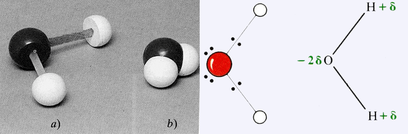
II - L’autoprotolyse de l’eau
1. Expérience :
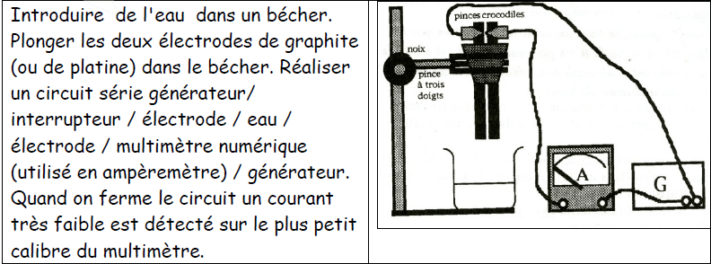
2. Interprétation :
L’eau, même pure, n’est pas constituée uniquement de molécules. Les chocs entre molécules d’eau produisent des ions. L’eau pure est donc faiblement conductrice d’électricité.
2H2O → H3O+ + OH- (I)
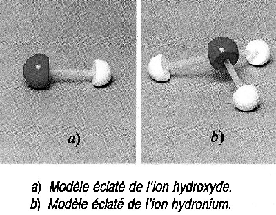
Ces ions de signes opposés s’attirent et redonnent rapidement des molécules d’eau.
H3O+ + OH- → 2H2O (II)
Les réactions (I) et (II) se produisent simultanément : des ions H3O+ et OH- disparaissent pour former des molécules d’eau et pendant le même temps des molécules d’eau s’ionisent pour reformer les ions H3O+ et OH-.
Chaque réaction est réversible et limitée par la réaction inverse. Les corps sont en équilibre chimique, les réactions (I) et (II) sont notées :
H3O+ + OH- → 2H2O
Cette réaction connue sous le nom d’autoprotolyse de l’eau, fournit autant d’ions H3O+ et que d’ions OH-.
III - Produit ionique de l’eau
La réaction d’autoprotolyse d’eau fournit autant d’ions H3O+ que d’ions OH-.
A 25°C [H3O+] = [OH-] = 1.10-7
- Si on ajoute à l’eau pure des ions hydronium venant de l’extérieur, le nombre d’ions hydronium augmente mais les ions hydroxyde trouvant autour d’eux d’avantage d’ions hydronium réagissent et donc disparaissent plus vite. Le nombre d’ions hydroxyde présent à chaque instant diminue.
Si [H3O+] ≻ 1.10-7 alors : [OH-] ≺ 1.10-7
- De même, si on ajoute à l’eau pure des ions hydroxyde venant de l’extérieur, le nombre d’ions d’hydroxyde augmente mais les ions hydronium trouvant autour d’eux davantage d’ions hydroxyde réagissent et donc disparaissent plus vite. Le nombre d’ions hydronium présents à chaque instant diminue.
Si [H3O+] ≺ 1.10-7 alors : [OH-] ≻ 1.10-7
La loi d’action de masse, appliquée à l’équilibre d’autoprotolyse de l’eau
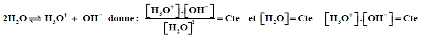
Dans toute solution aqueuse, à une température donnée, le produit des concentrations des ions hydroniums H3O+ et des ions hydroxydes OH- est constant. Ce produit appelé produit ionique de l’eau, est noté : Ke.
Ke = [H3O+].[OH-] à 25°C Ke = 1.10-14
pKe = -logKe ou Ke = 1.10-pKe donc pKe = 14
IV - Le pH
1. Définition:
Le pH d’une solution est l’opposé du logarithme décimal de la concentration en ions hydronium, exprimée en mol/l: pH = -log[H3O+] Cette relation est équivalente à
[H3O+] = 1.10-pH mol/l
Le pH d’une solution est une grandeur sans unité.
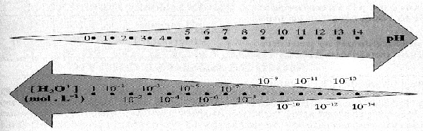
2. Evaluation du pH:
a. Le papier pH
Le papier pH est une méthode fréquemment employée en raison de sa simplicité d'utilisation et de son coût abordable. Il se présente sous la forme de bandelettes de papier imprégnées de réactifs qui changent de couleur selon le pH de la solution. Ses inconvénients majeurs sont son inexactitude de mesure due à l'étendue de la zone de virage, et la subjectivité d'appréciation des couleurs par l'utilisateur. De plus, les couleurs diffèrent suivant la marque du papier et ses constituants.
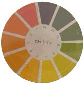
b. Les indicateurs colorés
Les indicateurs colorés, appelés aussi indicateurs acido-basiques, sont des substances qui présentent une coloration différente selon le pH de la solution à laquelle ils sont ajoutés.
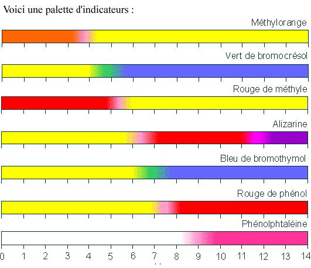
La plupart du temps, il donne deux couleurs distinctes et, dans une zone de une à deux unités de pH nommée zone de virage, des teintes correspondant au mélange de ces deux couleurs. Les indicateurs colorés les plus souvent utilisés sont : l'hélianthine appelée aussi méthylorange, le rouge de méthyle, le bleu de bromothymol et la phénolphtaléine.
c. pH-mètre
Le pH-mètre est un appareil de mesure qui permet de déterminer avec précision le pH d'une solution.
Il est constitué généralement d'une électrode en verre reliée à un convertisseur numérique.
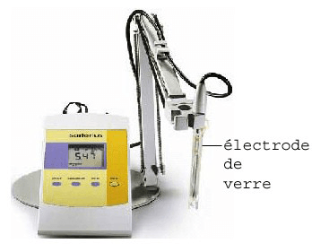
3. Limite de validité de la relation pH = -log[H3O+]
Si l’on mesure le pH d’une solution contenant 0.1 mol/l d’ions H3O+, on trouve environ 1.1, alors que la relation pH = -log[H3O+] donne pH = 1.
Dans le cas des solutions très concentrées, il se produit d’importantes interactions entre les ions. Ces interactions font que la relation pH = -log[H3O+] n’est plus applicable. Cette année, nous limiterons notre étude aux solutions diluées et nous admettrons que la relation pH = -log[H3O+] peut toujours s’appliquer.
Exemple :
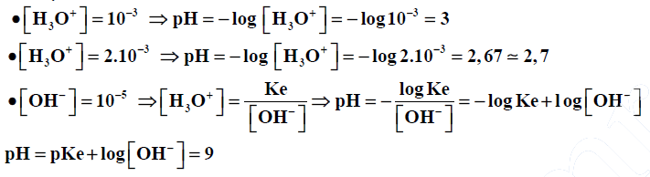
4. pH des solutions aqueuses :
a. Solution neutre :
Une solution aqueuse est dite neutre si elle contient autant d’ions hydronium que d’ions hydroxyde.
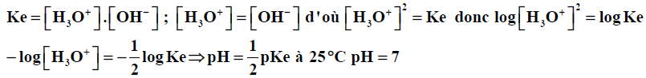
b. Solution acide:
Une solution aqueuse est dite acide si elle contient plus d’ions hydronium que d’ions hydroxyde.
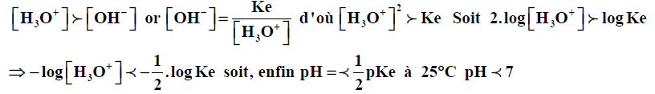
c. Solution basique :
Une solution aqueuse est dite basique si elle contient moins d’ions hydronium que d’ions hydroxyde.
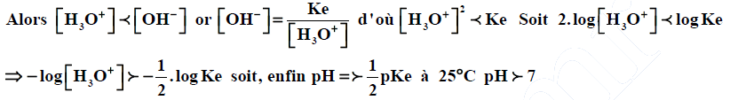
d. Echelle de pH
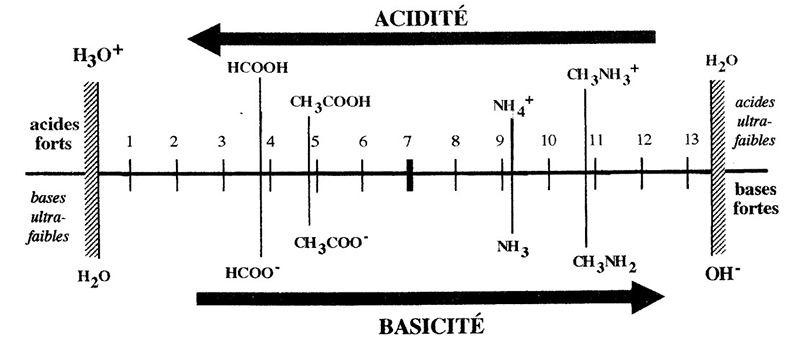
pH de quelques solutions :
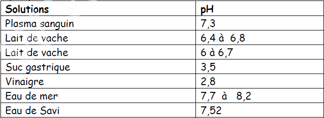
V - Loi de Le Chatelier
Si la réaction A + B ⇌ C + D est un équilibre chimique, alors :
- La réaction C + D → A + B est possible dans les mêmes conditions que A + B → C + D
- Lorsque les concentrations sont stables :
- Aucun des composés en présence n’a totalement disparue.
- Si on modifie la quantité de l’un des composés, les concentrations des autres varient
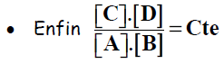
Si on ajoute A, [A] augmente et le dénominateur aussi, l’équilibre évolue de manière à ce que le numérateur augmente et le dénominateur diminue (rapport constant).
Pratiquement, la réaction qui consomme A (qu’on a ajouté) et produit C et D est favorisée par rapport à la réaction inverse.
Loi de Le Chatelier :
Lorsqu’on perturbe un équilibre chimique en faisant varier un de ses facteurs, la transformation qui s’oppose à la variation de ce facteur est favorisée.
VI - Les Lois de Conservation
1. Electroneutralité :
Dans une solution le nombre total de charges positives est égal au nombre total de charges négatives.
Exemple : Solution de chlorure de sodium :
- Réactions : NaCl → Na+ + Cl- 2H2O → H3O+ + OH-
- Espèces chimiques: H2O, Na+, Cl-, OH- et H3O+
- Electroneutralité:
Charges des H3O+ + charge des Na+ = charge des OH- + charge des Cl- Comme chaque type d’ion porte une seule charge, le nombre de charges est égal au nombre d’ions. On peut écrire :
nombre de H3O+ + nombre de Na+ = nombre de OH- + nombre de Cl-
en divisant par le volume de solution on obtient la molarité :
[H3O+] + [Na+] = [OH-] + [Cl-]
NB : On se limitera à des ions portant chacun une charge élémentaire.
2. Conservation de la matière :
La masse totale des produits apparus au cours d’une réaction chimique est égale à la masse des produits qui ont disparu. L’application de cette loi permet notamment de calculer les quantités de matières.
Si on additionne ce qui est en solution transformé et ce qui n’a pas changé, on retrouve ce qu’on a mis au départ.
Exemple :
On verse deux moles de molécules d’acide éthanoïque dans un litre d’eau. Une partie de ces molécules (n moles) donne des ions éthanoates CH3COO-, une partie de ces molécules (n’ moles) reste sous forme CH3COOH.
On peut écrire : 2 = n + n' . Si le volume de la solution est V : on peut écrire :
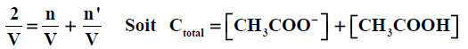